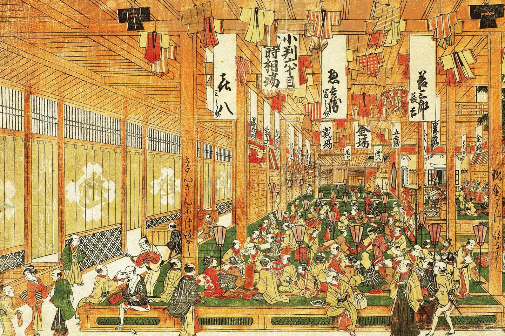

Geschichte & Kultur von Tokio
Einst ein kleines Fischerdorf namens Edo, entwickelte sich die Stadt ab 1603 zum Machtzentrum Japans. 1868 wurde die Stadt schließlich in Tokio ("Östliche Hauptstadt") umbenannt.

Heute trifft Jahrhunderte alte Tradition auf hochmoderne Lebensweisen. Shinto-Schreine und buddhistische Tempel stehen direkt neben futuristischen Wolkenkratzern.
← Zurück zur Übersicht